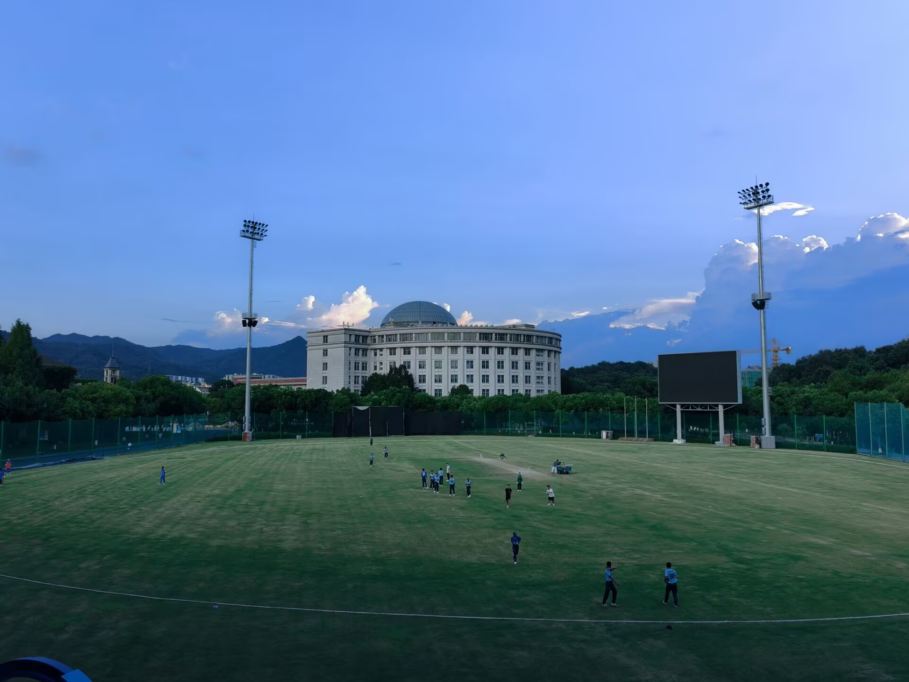

辗转求学便两年
应该还有足够的时间吧，但是如今再次来到了大二......
英国著名历史学家艾瑞克·霍布斯鲍姆（Eric Hobsbawm）曾经提出了两个很有意思的理论：“短暂的20世纪”和“漫长的19世纪”。由于历史的发展变迁不局限于人为规定的百年一世纪，这两个由霍布斯鲍姆推广的历史分期理论，分别指从1789年法国大革命到1914年一战前资本主义自由秩序全面胜利的“漫长19世纪”，以及从1914年一战爆发到1991年苏联解体、充满极端意识形态冲突的“短暂20世纪”。同样，本科阶段的第二年，也不能简单地以"第一次大二上学期"和"第二次大一下学期"分而治之。如果在杀手兔身上推广霍布斯鲍姆的理论，"漫长的第一次大二上学期"和"短暂的第二次大一下学期"差不多可以概括这一年。
"漫长的第一次大二上学期"指的是2025年7月9日搬到莫干山到2026年3月16日撤离莫干山的251天，"短暂的第二次大一下学期"指的是2026年3月16日返指上塘河到2026年6月25日回到山西省的这102天。虽然实际上的转折点还是2025年12月24日的转专业结果，但是体感上，以3月16日为分界线，前后的生活有着明显变化
关于这段历史的2025年发生的事情，杀手兔在去年年终总结就说的很清楚了，不过在这里杀手兔可以在大概说一下。9月中旬只身一人独守空房在莫干山的宿舍看计算机二级（最后悲催的只是合格），中秋节前吃到了难忘的萨莉亚，自此一发不可收拾；10月13号和群友们立马和山第一峰，精弘毅行见了不少朋友；11月8号CMC；11月15日搭建了小和山猫虫阁网页的原型莫干山猫虫阁；12月18号对屏峰微服私访进行转专业面试。弥年不得意，新岁又如何？2026年的第一秒杀手兔和朋友待在朝晖新教楼教室里，度过了2026第一个夜晚。寒假结束后，新的一学期开始了长达两周跨市上课的“校车纪元”(中国没多少大学生需要跨市上早八吧)；搬到朝晖，杀手兔体验了一把过渡时期的感受；四月份，筹备了一年半的徐州之行终于得以实施，在矿大和高中同学在一起确实比平常快乐不少，矿大也是很不错的学校(给矿✌️👻🌶️)；进入5月，比前两个月明显忙很多，5月下旬的数模校赛算是一个小高潮吧，其中的记忆点不少。谈笑间6月份也过去了，回家前还体验了太原高校一日游。现在看，“漫长的大二上”没干什么事情，但是干的事情影响却极为深远，“短暂的大一下”启动了不少事情，不过现在还难以看出成果来。（而且在这过程中很难说杀手兔有什么长进，悲）
就这样，当杀手兔的时间再次来到9月8号这个日子，总会不由自主想起来两年前的同一日，一架客机从太原武宿飞往杭州萧山。两年前初来乍到的杀手兔对新环境很稀奇，周末出去逛的频率是最高的，现在杭州的风物杀手兔皆已看便，除非有人陪，出去逛的诱惑力已经不如自己把自己软禁在小和山，看早晨的午潮山山间野马，中午的阴阳割昏晓，听上埠河的流水声。注意力有限，如今的杀手兔不会像两年前一样感到长时间的轻松了
还是有遗憾的。不少曾经想展开的事情有的事与愿违了，有的经过杀手兔的思考和极低的行动力后并没有得到执行。不过我个人认为的收获也不少。不过谈论过去的得与失并不会对来到杭州的第三年产生影响，而且起码到现在这一步，我还是暂时比较满意的
这两天一直在改善杀手兔的网页，算是对第三年进行一次盛大的献礼吧。杀手兔发现自己肚子里的墨水确实少了，不知道能不能凭借写博客来激发自己阅读、写作、推进项目、学习的动力和执行力。杀手兔真心希望等若干年后自己的博客能充斥着自己的成果，不过现在看来，希望渺茫。
2026年是个超强厄尔尼诺年，杭州的九月比前两年冷很多。晚上骑着电动车经过学校后山，已经能感受到一股凉意了。不知道今年的冬天是不是一个寒冬，到时候杭州会不会下大雪呢？瑞雪兆丰年啊！（杀手兔这家伙在夏天想什么呢）
“希望一切顺利”——杀手兔如是说。在小和山猫虫阁，杀手兔向猫猫虫长老讲述了上述这些故事。
